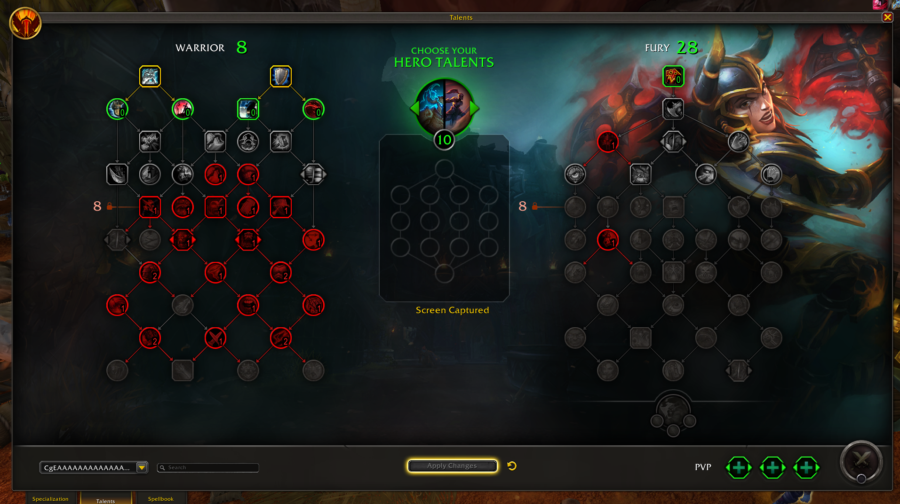
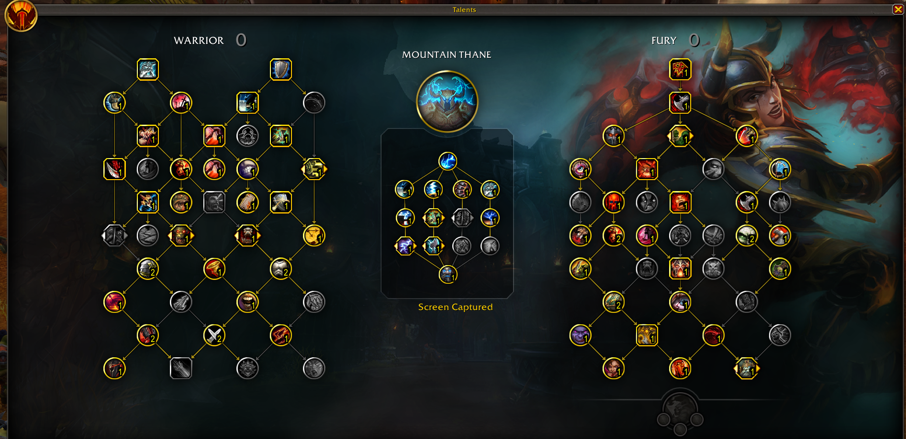

Boosted level 80 Warrior to 90 · Firestorm, Silvermoon realm (client 12.0.7, content 12.0.2, x1 XP) · First character · Returning from WotLK
From the Firestorm armory (you have to be logged in to see it), checked 27 November 2026.
| Item | Value | What it means |
|---|---|---|
| Race / class / level | Orc Warrior, 80 | Orcs get Blood Fury (extra attack power for a short time). Use it with your big cooldowns. |
| Average item level | 126 | All blue boost gear. Quest rewards in Eversong start replacing it. Equip anything with higher item level. |
| Gear slots | All 16 filled | Head, neck, shoulders, cloak, chest, bracers, gloves, belt, legs, boots, 2 rings, 2 trinkets. Shirt and tabard are empty, but they're only cosmetic. |
| Weapon | One two-handed axe, off-hand empty | That's an Arms setup. Fury needs a weapon in each hand. See the box below. |
| Critical Strike | 33.85% | Fine for leveling. Ignore stats until 90. Mastery at 0% is probably an armory display bug. |
| Haste | 15.95% | |
| Versatility | 4% | |
| Leech | 3% | |
| Health | 93,740 | |
| Talents | "N/D" in the armory (it can't show modern talents) | Done in game: all class, Fury and Mountain Thane points spent and valid (section 4.0b). Next point: the Apex talent at 81. |
| Professions | None | Learn Mining plus Blacksmithing or Herbalism. |
| Mounts | 5 | Highland Drake, Renewed Proto-Drake, Windborne Velocidrake, Cliffside Wylderdrake, Retrained Skyrazor. All of them can skyride. |
Press N. The window has two tabs at the bottom: Specializations (switch between Arms, Fury and Protection) and Talents (spend points).
| Part of the window | What it is |
|---|---|
| Class tree (left) | Warrior abilities every spec can take: Heroic Leap, Rallying Cry, Storm Bolt, Impending Victory and so on. Mostly utility and survival. |
| Spec tree (right) | Your spec's damage talents. This is where your rotation abilities come from. In Midnight, Apex talents sit at the very bottom of this tree. |
| Hero talents (top middle) | A third, smaller tree. Each spec chooses between two hero trees (Fury: Slayer or Mountain Thane). Click the hero icon to choose. |
| Loadout dropdown (bottom left) | Save, switch, import and share whole builds. |
| Apply Changes (bottom) | Nothing changes until you click this. |
0/2. Click again to add the second rank.Midnight adds 10 new talent points between levels 81 and 90. They rotate between the trees as you level:
When you have an unspent point, the talent icon on your micro-menu lights up. Press N every time you level up. It's easy to forget and play with points you never spent.
Make two loadouts and switch with the dropdown:
This build comes from the Icy Veins Fury Leveling Guide as it was in July 2026 (archived copy). The page says "Reviewed for Patch 12.0.7" (15 June 2026), which is the version that matches your realm.
Fury Level 80 Midnight Leveling (12.0.7): select it all and copy:
CgEAAAAAAAAAAAAAAAAAAAAAAAAAAAAAgGDMzMzmZmHYGjZMzMzYMzsNzMGjZZMzMAAQYgNYhRDDgZBDLAGbGbDAMDghZmxwACgEAAAAAAAAAAAAAAAAAAAAAAAAAAAAAgGDmZmZ2WmZmZMmxMzMzMzMz2MzYmxsMmZGAAIMwGssY0YGAzCGWAMDmNAYmBwgFGGMG
What the screenshot shows:
How to fix it, step by step:

| Tree | Status |
|---|---|
| Warrior (class) | 0 points left, so everything is spent. Every node is gold (learned) and none are red. The 8-point lock is open and the path runs all the way down. |
| Fury (spec) | 0 points left, filled from Bloodthirst at the top down to the bottom row. The two-rank nodes are fully filled (2/2). |
| Hero | Mountain Thane is active and all 10 points are spent, including both choice nodes. The two greyed-out nodes in the bottom row are the options you didn't pick, which is normal. |
| Apex (circle at the bottom of the Fury tree) | Empty, which is expected. It opens at level 81. |
The nodes are gold rather than green, so the changes have been applied. If the loadout is still named after the long "CgEAAAA…" string, rename it to something like "Leveling" from the loadout dropdown.
Next steps:
Node names here come from the icons, not the tooltips. To check specific picks, hover over a node in game and screenshot its tooltip.
To import it (on official servers only; on Firestorm use 4.0a above): press N, open the loadout dropdown, choose Import, paste the string, click Import, then Apply Changes. Then drag any new abilities from the spellbook (P) onto your bars. See section 3.4 for more detail.
Key talents already in the build: Impending Victory, Second Wind, Heroic Leap, Bounding Stride, Fast Footwork, Spell Reflection, Storm Bolt, Thunder Clap, Shockwave, Piercing Howl, Improved Whirlwind, Meat Cleaver, Rampage, Recklessness, Odyn's Fury, Avatar, Enraged Regeneration, Rampaging Ruin, Dual Wield Specialization.
Note: this order comes from the 12.1.5 guide, because the archived 12.0.7 page didn't save its level-by-level list. Use it as a guide to talent names. If a talent isn't in your tree, take the closest node that improves Rampage, Whirlwind/Thunder Clap or survival. The Apex talent at the bottom of the spec tree is always the first priority.
| Level | Talent | Tree |
|---|---|---|
| 81 | Rampaging Berserker (1/4) | Spec (Apex) |
| 82 | Cruel Strikes (1/2) | Class |
| 83 | Burst of Power | Hero |
| 84 | Rampaging Berserker (2/4) | Spec (Apex) |
| 85 | Cruel Strikes (2/2) | Class |
| 86 | Storm Bolts | Hero |
| 87 | Rampaging Berserker (3/4) | Spec (Apex) |
| 88 | Anger Management | Class |
| 89 | Thorim's Might | Hero |
| 90 | Rampaging Berserker (4/4) | Spec (Apex) |
Mountain Thane hero talents already taken at 80: Crashing Thunder, Thunder Blast, Flashing Skies, Avatar of the Storm, Strength of the Mountain, Storm Surge, Conductivity, Capacitance, Ground Current, Keep Your Feet on the Ground.
These come from Method.gg (12.1.5). They're full level 90 builds, so at 80 the game may not import all of them. Use them once you're 90, or save one as a second loadout.
| Build | Use for | String |
|---|---|---|
| Mountain Thane, AoE | Groups of mobs, dungeons | CgEAAAAAAAAAAAAAAAAAAAAAAAAAAAAAgGDDzMz2yMmZmxMmZMjZMzyMzYMzsMmZGAAIMwGssZ0YGQmFMjFAzgxAgZGADzMzMMYA |
| Mountain Thane, Single Target | Elites and bosses | CgEAAAAAAAAAAAAAAAAAAAAAAAAAAAAAgGDDzMz2yMzMzMMmZmZMjZWmZGjZmlxMzAAAhB2glNjGzAysgZsAYGMGAMzAYYMzMMYA |
| Slayer, AoE | Groups, with more burst damage | CgEAAAAAAAAAAAAAAAAAAAAAAAAAAAAAgGDDmZ2WmZmZmxMmZMjZMzyMzYMzsNmZGAAIGLLDsAmgZYCMDbAmZjxAAgZGDzMzMMYA |
| Slayer, Single Target | Single target | CgEAAAAAAAAAAAAAAAAAAAAAAAAAAAAAgGDDmx2yMzMzMmxMzMjZmZWmZGjZmthZGAAIGLLDsAmgZYCMDbAzMbMGAAMzYYMzMMYA |
If you pick talents yourself, take them in this order of importance. For leveling, survival and AoE matter more than single-target damage.
| Spec | Pick for leveling | Why |
|---|---|---|
| Fury | Mountain Thane | Lightning damage that hits groups. Best when you're pulling several mobs. |
| Arms | Colossus or Slayer | Colossus has the tougher, heavier hits. Slayer gives more Execute damage. |
| Protection | Mountain Thane or Colossus | Either works for dungeons. |
Rule of thumb: read the tooltip. If it says "all enemies", "nearby enemies", "heals you" or "reduces damage taken", it's good for leveling.
A "rotation" in modern WoW is a priority list, not a fixed order. Each time you press a button, use the highest ability on the list that's ready. The lists below are simplified for open-world mobs. Raid rotations are more complex, so don't worry about those yet.
This is the exact priority from the 12.0.7 Icy Veins leveling guide. It matches your realm's build. Use the highest one that's ready:
The simplified lists below still work as a reminder, but the list above is the one to follow.
| Need | Ability | When |
|---|---|---|
| Heal | Impending Victory / Victory Rush | Below about 70% health, or after every kill. |
| Emergency | Enraged Regeneration (Fury), Die by the Sword (Arms) | When the pull goes wrong. Use it early. |
| Extra health | Rallying Cry | Use it together with the emergency button. |
| Interrupt | Pummel | On healers and casters. |
| Reflect | Spell Reflection | Against big spells cast at you. |
| Remove mobs | Intimidating Shout, Storm Bolt | To get extra mobs off you. |
| Fear or stun break | Berserker Rage / Berserker Shout | When you're feared. |
| Buff | Battle Shout | Keep it up at all times. |
| Potion | Healing potion, Healthstone | Buy potions from the Auction House early. |
| Level | Zone | Notes |
|---|---|---|
| 80–83 | Eversong Woods | Opening campaign, 3 chapters. Set your Hearthstone to Sanctum of Light. Mounts are disabled for part of the Sunwell intro. Finish each hub before moving on. |
| 83–88 | Zul'Aman, Harandar, Arator's Journey | All three are needed before Voidstorm. Do Zul'Aman first (quests closest together). Harandar has harder mobs. Arator's Journey has more travel. |
| 88–90 | Voidstorm | Hardest mobs, and low-gravity areas change jump height and fall damage. Most players hit 90 around Howling Ridge. |
On 12.0.2, quests are your main XP. Do the side quests in each hub, not only the campaign.
Run each one once, with its quest in your log. Queue with I while you quest.
| Dungeon | Level |
|---|---|
| Windrunner Spire | 81+ |
| Murder Row | 83+ |
| Voidscar Arena | 85+ |
| Den of Nalorakk | 86+ (pick up the quest chain first) |
| Nexus-Point Xenas | 88+ (campaign climax) |
Firestorm doesn't say whether the 12.0.7 XP buffs are on. Watch how much XP your first delve and dungeon quest give, and change your plan if they give a lot.
| Source | Available? | Notes |
|---|---|---|
| Campaign + side quests | Yes, the main source | Do every quest in each hub. |
| Rested XP | Yes | Use it early. |
| Dungeons with quest | Yes | Once each. |
| War Mode | About 15% | Other players can attack you. |
| Gathering nodes | Small | XP and gold. |
| Delves | Reduced | Their big XP buff came in 12.0.7. |
| Warband Mentor bonus | No | Needs max-level alts. |
| Darkmoon Faire +10% | Likely no | Part of the 12.0.7 changes. |
| WotLK | Now |
|---|---|
| One talent tree per spec, with points spread around | Class tree + spec tree + hero tree. Changes are free, and you can import builds (section 3). |
| Normal flying | Skyriding: fast flying based on momentum (dive, then boost). |
| Quest addons | Built-in quest tracker, map markers and Edit Mode. |
| Characters kept separate | Warband: shared bank, transmog and reputation. |
| Heroic dungeons | Delves (1–5 players with an NPC companion) and Mythic+ (timed dungeons). |
| Emblems | Crests for upgrading gear, and the Great Vault (a weekly reward chest). |
| Hit, expertise, armor penetration | Gone. The stats now are Critical Strike, Haste, Mastery and Versatility. |
Compiled November 2026 from retail guides. Some details may differ on a private server running 12.0.2.